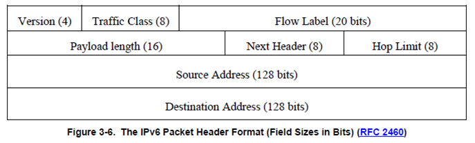
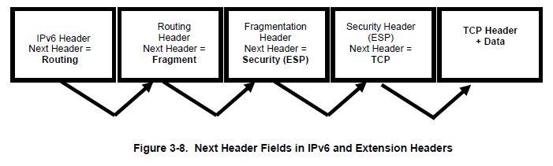
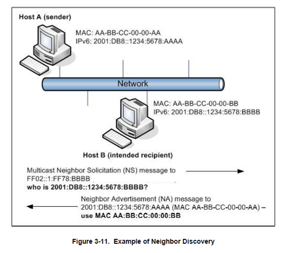
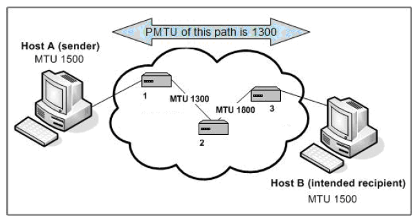

Summary of Certification Process (part 1)
Sam Bowne
City College of San Francisco
Register a Domain Name
- Domain registrar
- Registers whois info
- Assigns authoritative DNS server
- Puts "glue records" at the top-level domain (.info, .com, etc) with A and AAAA records of your nameservers
3.3 IPv6 Header

- Traffic Class: same as TOS in IPv4
- Flow Label: used for QoS
- Next header: can start a chain of headers
IPv6 Extension Headers

- Extension headers are only examined by the destination node
- Expect for the rarely-used Hop-by-Hop
Most Important Extension Headers
- TCP, UDP, ICMP6
- Specify the higher-layer protocol
- AH and ESP
- Mobility
Routing header Zero
- Deprecated, and recommended to be filtered out
- http://www.ietf.org/rfc/5095.txt
- A denial-of-service condition is possible by specifying a malicious path, such as a loop
3.5.3 neighbor Discovery
- Main Uses
- Autoconfiguration of IPv6
- Duplicate Address Detection (DAD)
- Address Resolution (replacing ARP)
Router Advertisement
- Router Solicititation (RS)
- Sent by an interface when it is enabled and needs an IP address
- Router Advertisement(RA)
- Routers send these messages out, telling clients the network prefix and other configuration information
Neighbor Solicitation
- Neighbor Solicitation (NS)
- A node sends this message to verify that a neighbor is still reachable, or for Duplicate Address Detection (DAD)
- Neighbor Advertisement (NA)
- The response to a NS message
Solicited Node Multicast Address

- "Soliciated Node Multicast Address" (see p.3-27)
3.5.4 Autoconfiguration
- Automatic addressing via two mechanisms
- Stateless Autoconfiguration (SLAAAC)
- No server needed
- Routers advertise network portions
- Hosts make up their own host portions
- Stateful Autoconfiguration (DHCPv6)
3.5.6 path Maximum Transmission Unit (PMTU) Discovery
- IPv4 allows each router to fragment packets if needed to pass into a network with a small MTU
- In IPv6, only the sender can change the packet size
- this makes the process much more efficient
Path Maximum Transmission Unit (PMTU) Discovery
- ICMPv6 "Packet Too Big" messages are sent to inform the source device to use smaller packets
